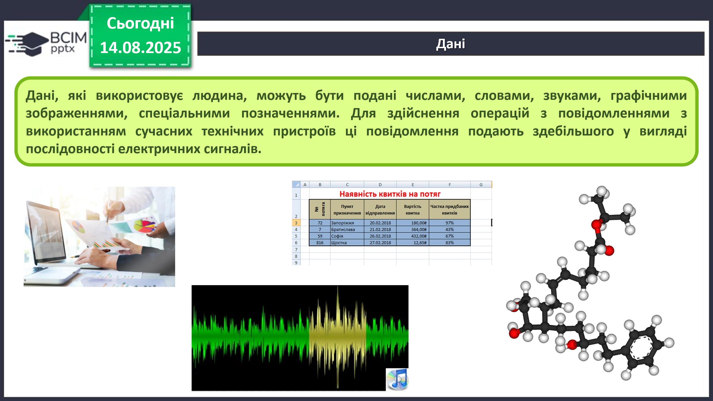
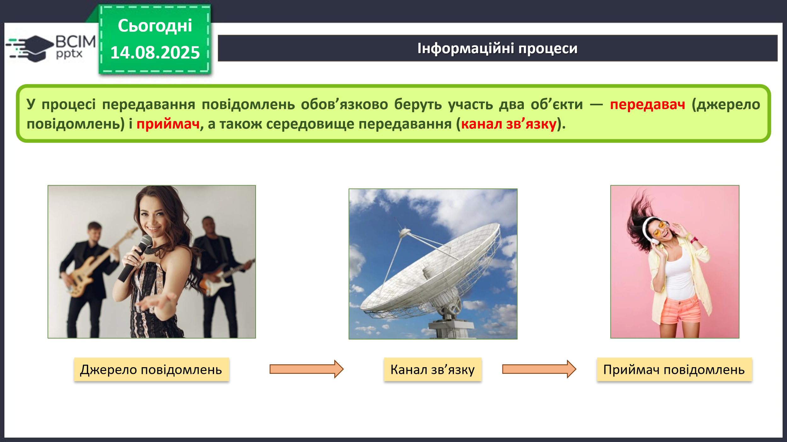
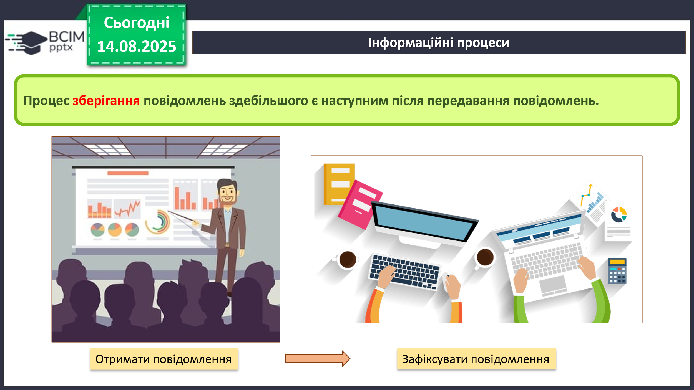
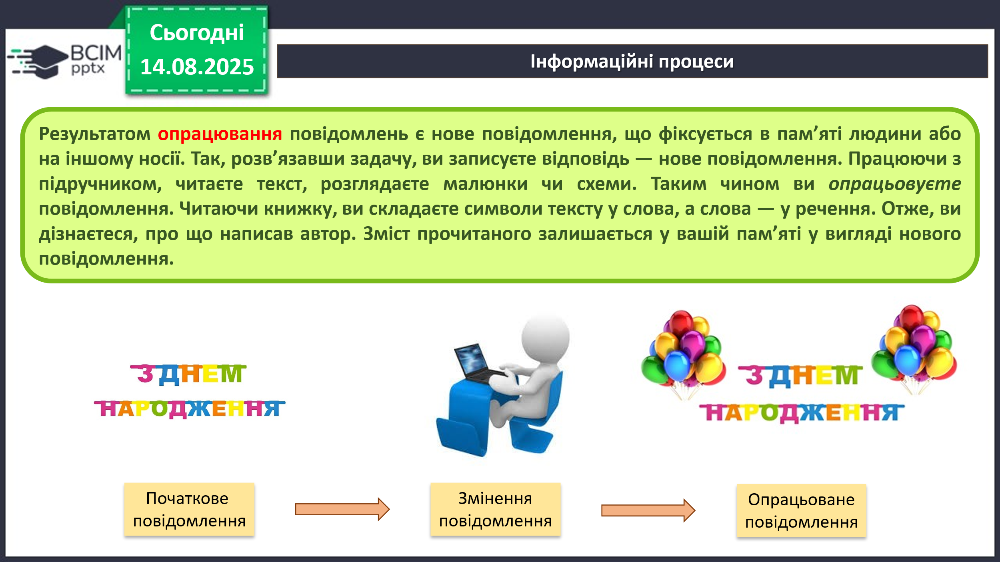

HUB 56 · 5 клас · Урок №4
Дані. Інформаційні процеси
Передавання, зберігання й опрацювання повідомлень.
Що таке дані
Для зберігання, передавання, опрацювання повідомлень, особливо якщо передбачається використання різноманітних технічних пристроїв, їх подають у спеціальному вигляді.
Дані — це повідомлення, які подано так, що їх зручно зберігати, передавати та опрацьовувати.
Дані, які використовує людина, можуть бути подані числами, словами, звуками, графічними зображеннями, спеціальними позначеннями. Для здійснення операцій з повідомленнями за допомогою сучасних технічних пристроїв ці повідомлення подають здебільшого у вигляді послідовності електричних сигналів.

Інформаційні процеси
Процеси передавання, зберігання, опрацювання повідомлень називають інформаційними процесами.
Передавання повідомлень
Для висловлення своїх думок людина використовує усне й писемне мовлення, спеціальні символи й позначки, мистецькі образи. Так здійснюється передавання повідомлень від людини до людини.
Передавання повідомлень відбувається не тільки безпосередньо між людьми. Людина може передавати повідомлення різноманітним пристроям. Наприклад, натиснувши кнопку потрібного поверху в ліфті, ви передаєте йому повідомлення. І навпаки, пристрій може передавати повідомлення людині, наприклад дзвоник на урок.
Для передавання повідомлень використовують кабельне й супутникове телебачення, мобільний і дротовий телефонний зв’язок, поштову службу, спеціальних кур’єрів.

У процесі передавання повідомлень обов’язково беруть участь два об’єкти — передавач (джерело повідомлень) і приймач, а також середовище передавання — канал зв’язку.
Друг або подруга, що розповідає цікаву історію, є передавачем повідомлення, а ті, хто слухають, — приймачами. Водії є приймачами повідомлень від передавача — світлофора.
Зберігання повідомлень
Для зберігання повідомлень сучасна людина використовує різноманітні носії:
- власну пам’ять — головний мозок;
- папір;
- кіно- і фотоплівку;
- магнітні й оптичні диски;
- флешпам’ять.
Процес зберігання повідомлень здебільшого є наступним після передавання повідомлень.

Цікаві факти з історії
Завдяки повідомленням давніх цивілізацій, наприклад шумерів, які жили в Азії понад 6 тисяч років тому, можемо дізнатися про їхні наукові досягнення, побут і стосунки. Шумери зберігали повідомлення на глиняних табличках, багато яких знайдено під час розкопок.
Представники трипільської культури, які жили приблизно в той самий час на території нинішньої України, не залишили текстових повідомлень. Про їхнє життя ми можемо уявляти на підставі побутових речей і глиняних скульптур.
Опрацювання повідомлень
Результатом опрацювання повідомлень є нове повідомлення, що фіксується в пам’яті людини або на іншому носії. Розв’язавши задачу, ви записуєте відповідь — нове повідомлення. Працюючи з підручником, читаєте текст, розглядаєте малюнки чи схеми та опрацьовуєте повідомлення.
Будь-яке перетворення повідомлення є його опрацюванням:
- переклад тексту іншою мовою;
- складання схеми руху від дому до школи;
- малювання натюрморту за зразком;
- відтворення піаністом музичного твору за нотним записом.

Опрацьовувати повідомлення людина може за допомогою різноманітних пристроїв: клавіатури й монітора, мобільного телефона, фотоапарата, платіжного термінала. Усі операції в цих пристроях здійснюються в порядку, який передбачила людина.